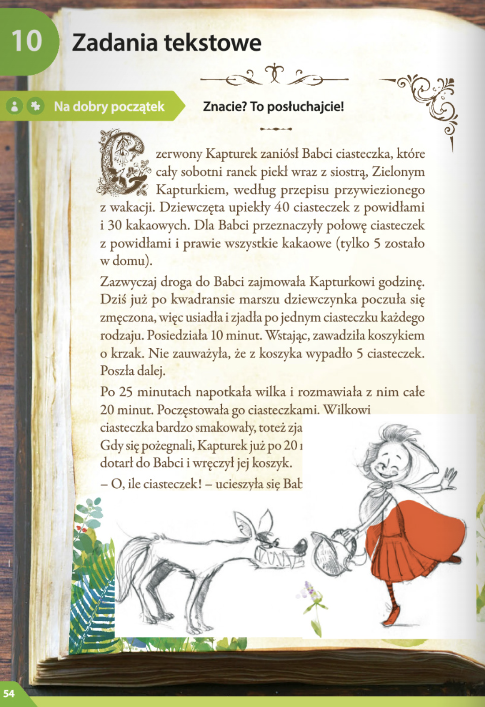
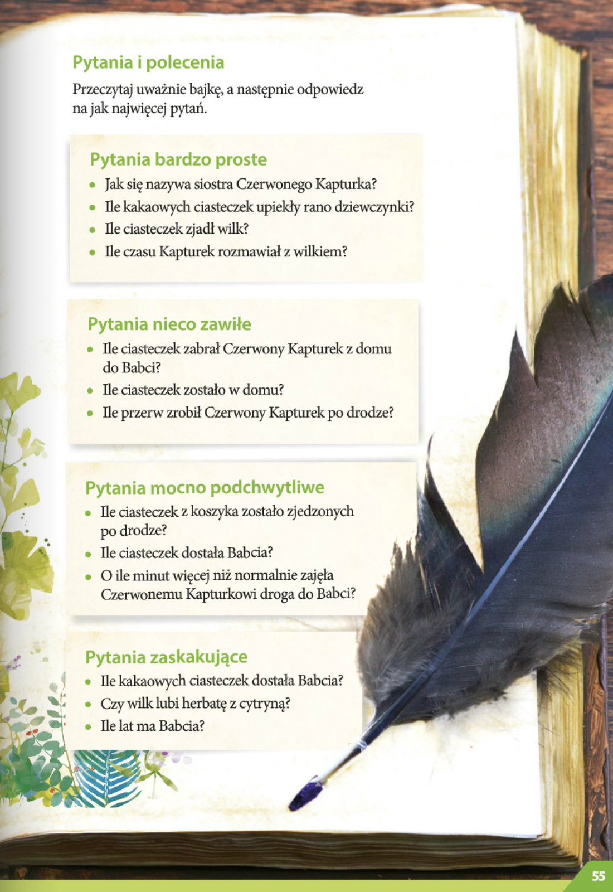
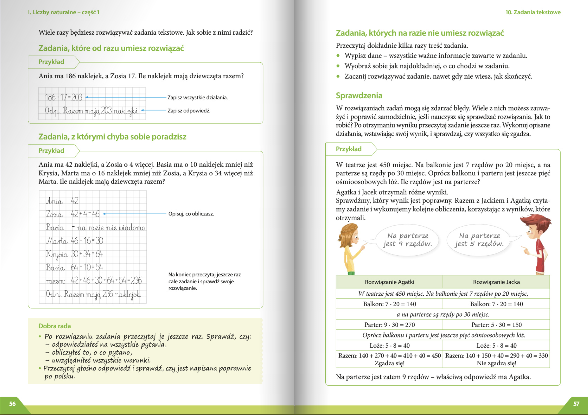

Rok temu Asia miała trzy komplety kredek po 15 sztuk w każdym. Teraz w pierwszym komplecie brakuje jej 4 kredek, w drugim 5 kredek, a w trzecim jednej kredki. Ile kredek ma teraz Asia?
Matematyka
Liczby naturalne - czesc 1
Lekcja 10. Zadanie tekstowe / 54-60
Текстовая задача



Matematyka klasa 4 - Zadanie tekstowe 1.1
Matematyka klasa 4 - Zadanie tekstowe 1.2
Matematyka klasa 4 - Zadanie tekstowe 2.1
Matematyka klasa 4 - Zadanie tekstowe 2.3
Matematyka klasa 4 - Zadanie tekstowe 3.1
Matematyka klasa 4 - Zadanie tekstowe 3.4
Zbiór zadań
Rozgrzewka
Zadanie 1
Rozwiązanie
Obliczenia
1. Ile kredek miała Asia na początku:
3 komplety×15=45 kredek
2. Ile brakuje w każdym komplecie teraz:
- w pierwszym brakuje 4,
- w drugim brakuje 5,
- w trzecim brakuje 1.
Razem brakuje: 4+5+1=10
3. Ile kredek ma obecnie: 45−10=35
Odpowiedź
Asia ma teraz 35 kredek.
Zadanie 9
Rada rodziców zamierza kupić do świetlicy szkolnej flamastyry. Cena jednogo komplektu kosztuje 8 zł. Ile komletów flamasterów mogą kupić rodzice i ile peniędzy im zostanie, jeśli mają do dyspozycji:
a) 72 zł
b) 50 zł
c) 63 zł
d) 31 zł
Rozwiązanie
Obliczenia
a) 72 zł ÷ 8 = 9 kompletów, reszta 0 zł
b) 50 zł ÷ 8 = 6 kompletów, 50 – (6×8) = 50 – 48 = 2 zł
c) 63 zł ÷ 8 = 7 kompletów, 63 – (7×8) = 63 – 56 = 7 zł
d) 31 zł ÷ 8 = 3 komplety, 31 – (3×8) = 31 – 24 = 7 zł
Odpowiedź
a) 9 kompletów i 0 zł reszty
b) 6 kompletów i 2 zł reszty
c) 7 kompletów i 7 zł reszty
d) 3 komplety i 7 zł reszty
Zadanie 8
Saragon, opiekun dzikich i niesamowytych stworzeń, dal każdej z głów siedmiogłowego smoka 7 bananów i zostały mu 3 banany. Ile bananów miał Saragon?
Rozwiązanie
Obliczenia
Smok ma 7 głów.
Każda głowa dostała 7 bananów: 7 × 7 = 49
Zostały jeszcze 3 banany: 49 + 3 = 52
Odpowiedź
Saragon miał 52 banany.
Trening
Zadanie 12
Zosia przyniosła do szkoły śliwki, którymi poczęstowała 5 koleżanek. Pozostałe śliwki zjadła sama. Ile śliwek przyniosła Zosia do szkoły, jeśli:
a) każda koleżanka dostała 4 śliwki, a dla nej zostały 3,
b) każda koleżanka dostała 5 śliwek, a dla niej zostały 4?
Rozwiązanie
Obliczenia
a) 5 koleżanek × 4 śliwki = 20 śliwek
Zosi zostały 3 → 20 + 3 = 23
b) 5 koleżanek × 5 śliwek = 25 śliwek
Zosi zostały 4 → 25 + 4 = 29
Odpowiedź
a) Zosia przyniosła 23 śliwki.
b) Zosia przyniosła 29 śliwek.
Zadanie 13
Paweł kolekcjonuje modele starych samochodów. Pewnogo dnia postanowił poukładać je w rzędach, po 7 sztuk w każdym. Niestety okazało się, że ostatni rząd jest niepełny. Ile samochodów mogło stać w ostatnim rzędzie?
Rozwiązanie
Obliczenia
Paweł układa samochody po 7 sztuk w rzędzie.
Skoro ostatni rząd jest niepełny, to oznacza, że w tym rzędzie mogło być mniej niż 7, ale więcej niż 0.
Czyli w ostatnim rzędzie mogło stać: 1, 2, 3, 4, 5 albo 6 samochodów.
Odpowiedź
W ostatnim rzędzie mogło stać 1, 2, 3, 4, 5 lub 6 samochodów.
Zadanie 14
Zasadzienie drzewka trwa 8 minut. Ile drzewek można zasadzić w ciągu:
a) jednej godziny,
b) czterech godzin?
Rozwiązanie
Obliczenia
1 godzina = 60 minut
a) 60 ÷ 8 = 7 drzewek (reszta 4 minuty)
b) 4 godziny = 4 × 60 = 240 minut
240 ÷ 8 = 30 drzewek
Odpowiedź
a) W ciągu jednej godziny można zasadzić 7 drzewek.
b) W ciągu czterech godzin można zasadzić 30 drzewek.
Zadanie 16
Na wykonanie jednej kokardzki potrzeba 15 cm wstążki. Ile najwięcej kokardek można przygotować ze wstążki o długości 130 cm.
Rozwiązanie
Obliczenia
130 ÷ 15 = 8 (reszta 10 cm)
Odpowiedź
Ze wstążki o długości 130 cm można przygotować 8 kokardek, a zostanie 10 cm wstążki.
Na medal
Zadanie 20
Na zamku miało się odbyć przyjęcie urodzinowe jednej z córek króla. Zaproszono na nie 1000 osób. Ochmistrz Pasibrzuch wyjmował ze skrzynek pomarańcze i układał je na paterach. Na każdą paterę kładł 7 pomarańczy. Gdy w skrzynce zostawało już mniej niż 7 pomarańczy, po prostu je zjadał. Ile pomarańczy zjadł Pasibrzuch, gdy wyłożył już pomarańcze z: 8 skrzynek po 40 sztuk, 9 skrzynek po 50 sztuk, 14 skrzynek po 70 sztuk?
Rozwiązanie
Obliczenia
1. Obliczamy liczbę pomarańczy w każdej grupie skrzynek
- 8 skrzynek × 40 = 320 pomarańczy
- 9 skrzynek × 50 = 450 pomarańczy
- 14 skrzynek × 70 = 980 pomarańczy
2. Ile pater można ułożyć i ile zostaje do zjedzenia
- 320 ÷ 7 = 45 pater i reszta 5 → Pasibrzuch zjadł 5
- 450 ÷ 7 = 64 patery i reszta 2 → Pasibrzuch zjadł 2
- 980 ÷ 7 = 140 pater i reszta 0 → Pasibrzuch nie zjadł nic
3. Suma zjedzonych pomarańczy
5 + 2 + 0 = 7
Odpowiedź
Pasibrzuch zjadł 7 pomarańczy.
Zadanie 22
Jurek ma w skarbonce mniej niż 30 zł. Postanowił przeznaczyć te pieniądze na zakup rybek do akwarium. Obliczył, że gdyby kupił po 5 zł za sztukę, to zostałoby mu 2 zł. Gdyby kupił rybki po 6 zł za sztukę, zostałoby mu 4 zł. Ile pieniędzy ma Jurek w skarbonce?
Rozwiązanie
Obliczenia
1. Gdyby kupił rybki po 5 zł za sztukę → reszta 2 zł:
x–5⋅n=2
czyli x–2 jest podzielne przez 5.
2. Gdyby kupił rybki po 6 zł za sztukę → reszta 4 zł:
x–6⋅m=4
czyli x–4 jest podzielne przez 6.
Szukanie liczby mniejszej niż 30
- x–2 podzielne przez 5 → możliwe wartości x=2,7,12,17,22,27 (mniejsze niż 30)
- x–4 podzielne przez 6 → możliwe wartości x=4,10,16,22,28
Wspólna liczba: 22
Odpowiedź
Jurek ma w skarbonce 22 zł.
Zadanie 23
Mama ugotowała 34 pierogi z jagodami. Rozdzieliła je równo między pięcioro dzieci, a resztę wzięła dla siebie. Dla mamy zostało mniej pierogów niż otrzymało każde dziecko. Ile pierogów otrzymało każde dziecko, a ile zostało dla mamy?
Rozwiązanie
Obliczenia
34 pierogi ÷ 5 dzieci = 6 pierogów na każde dziecko i reszta 4.
To znaczy:
- każde dziecko dostało po 6 pierogów,
- dla mamy zostały 4 pierogi.
dziecko ma 6 pierogów, mama 4 → rzeczywiście mama dostała mniej.
Odpowiedź
Każde dziecko otrzymało 6 pierogów, a dla mamy zostały 4 pierogi.
Zadanie 26
Klasa Oli liczy mniej niż 20, ale więcej niż 10 osób. Gdyby uczniowie usiedli przy stołach w 3-osobowych grupach, to przy jednym stoliku musiałyby siedzieć tylko 2 osoby. Gdyby natomiast utworzyli 4-osobowe zespoły, to przy jednym stoliku zostałaby jedna osoba. Ilu uczniów jest w klasie Oli?
Rozwiązanie
Obliczenia
Szukamy liczby x (liczba uczniów), gdzie:
- 10 < x < 20
- przy dzieleniu przez 3 zostaje reszta 2 → x ≡ 2 (mod 3)
- przy dzieleniu przez 4 zostaje reszta 1 → x ≡ 1 (mod 4)
Sprawdźmy liczby od 11 do 19:
- 11 ÷ 3 = 3 reszty 2 ✅, 11 ÷ 4 = 2 reszty 3 ❌
- 14 ÷ 3 = 4 reszty 2 ✅, 14 ÷ 4 = 3 reszty 2 ❌
- 17 ÷ 3 = 5 reszty 2 ✅, 17 ÷ 4 = 4 reszty 1 ✅
Pasuje tylko 17.
Odpowiedź
W klasie Oli jest 17 uczniów.